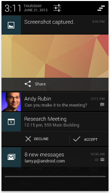
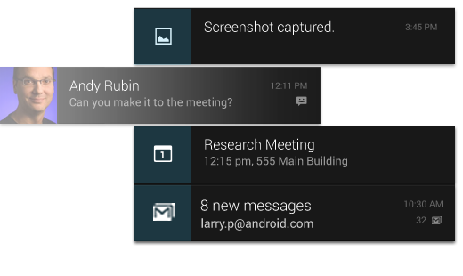

안드로이드 시스템 UI는 여러분의 앱 위에 프레임워크를 제공합니다.
시스템 UI의 주요 부분으로 홈 화면 경험, 전역적인 기기 탐색, 알림이 있습니다.
여러분이 만들 앱은 안드로이드를 전반적으로 일관성있게 경험하고 즐겁게 사용하는 역할을 가집니다.
이 장 마지막에서는 그러한 목표를 달성하기 위해 앱이 가져야 할 주요 사항을 소개합니다.
우선, 안드로이드 사용자 인터페이스의 주요 측면에 대해 간단히 개요를 훑어보도록 하겠습니다.

홈 화면
홈은 앱 바로가기, 폴더, 위젯을 직접 배치하는 공간입니다.
홈 화면에서 좌우로 스와이프하여 다른 패널로 이동할 수 있습니다.
아랫 부분의 즐겨찾기 트레이에서 가장 중요한 바로 가기와 폴더를 항상 표시해 줍니다.
즐겨찾기 트레이 중앙의 모든 앱 버튼을 터치하면 전체 앱과 위젯 목록을 볼 수 있습니다.

모든 앱 화면
모든 앱 화면에서는 기기에 설치한 모든 앱과 위젯을 볼 수 있습니다.
모든 앱 화면에서 앱이나 위젯 아이콘을 끌어서 홈 화면 빈 곳에 둘 수 있습니다.

최근 앱(Recents) 화면
최근 앱 화면에서는 최근 사용한 앱을 쉽게 전환할 수 있습니다.
여러 작업 사이에서의 탐색 경로를 명확하게 알 수 있습니다.
내비게이션 바 오른쪽의 최근 앱 버튼을 누르면 최근에 사용한 앱 목록이 나옵니다.
앱 목록은 시간 역순으로 나오며, 가장 최근에 쓴 앱을 맨 아래에 보여줍니다.
앱을 터치하면 그 앱으로 전환합니다. 앱을 좌우로 스와이프하면 항목을 지울 수 있습니다.
시스템 바는 알림을 표시하고 기기의 상태를 알리거나 앱 사이를 이동하는 역할을 가집니다.
시스템 바는 보통 앱과 함께 표시됩니다.
앱이 영화나 그림처럼 몰입형 컨텐츠를 제공하는 경우는 시스템 바를 숨겨 방해받지 않도록 전체 화면 컨텐츠를 즐길 수 있습니다.
알림은 상태 표시줄을 통해 언제든지 접근할 수 있는 짧은 메시지입니다.
알림에서는 업데이트나 일정 알림 등 중요하긴 하지만 사용자를 방해할 필요는 없는 정보를 제공합니다.
상태 표시줄을 아래로 스와이프하여 알림 서랍(notifications drawer)을 열 수 있고,
그 상태에서 각 알림을 터치하면 그 알림에 해당하는 앱을 엽니다.
알림에 대한 세부 사항


대부분의 알림은 제목 한 줄과 메시지 한 줄로 이루어집니다.
알림은 두 줄로 구성하는 것이 바람직합니다. 필요하다면 세 번째 줄을 추가하세요.
선택 사항으로 알림 시간을 넣을 수 있습니다.
알림을 좌우로 스와이프하면 알림 서랍에서 그 알림을 지울 수 있습니다.
전형적인 안드로이드 앱은 액션 바와 앱 컨텐츠 영역으로 이루어져 있습니다.
-
메인 액션 바
앱의 명령 및 통제 센터입니다. 메인 액션 바는 앱의 계층과 뷰를 탐색하고
중요한 작업을 다루는 요소를 담고 있습니다.
액션 바에 대한 세부 사항
-
뷰 컨트롤
앱이 제공하는 여러 뷰를 전환할 수 있는 방법을 제공합니다.
뷰는 일반적으로 앱의 데이터를 다양하게 배치하거나 다양한 기능을 제공하도록 구성합니다.
-
컨텐츠 영역
앱의 컨텐츠를 표시하는 공간입니다.
-
분할 액션 바
분할 액션 바는 액션들을 추가적인 바를 통해 배치하는 방법으로, 메인 액션 바 아래나 화면 하단에 배치됩니다.
이 예제에서는 메인 액션 바에 넣기에는 공간이 모자란 중요 액션들을 분할 액션 바에 두었습니다.